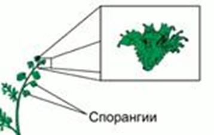
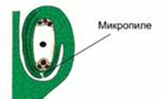
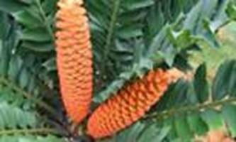
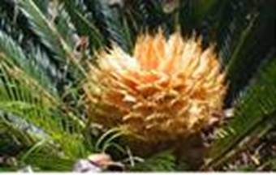
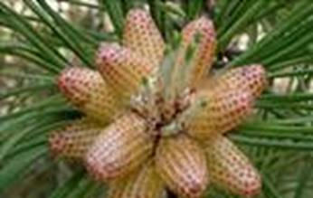
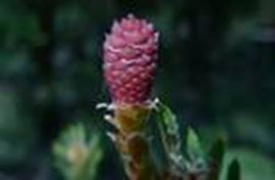
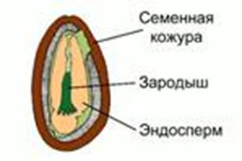

Женские споры несут в себе большой запас питательных веществ, потому крупнее мужских. Они напоминают семязачатки семенных растений. А мелкие мужские споры похожи на пыльцевые зерна.
Семязачатки покрыты несколькими слоями защитной оболочки. Внутренний слой произошел от спор. Таким образом, можно предположить, что семязачатки произошли из спорангиев. И остальные слои защитной оболочки произошли от них же (см. Рис. 1).

Рис. 1. Спорангии семенного папоротника
Микропиле (см. Рис. 2) – узкое отверстие на вершине семязачатка, переходящее в канал.

Рис. 2. Микропиле
Размножение семенами – главный признак, отличающий семенные растения от папоротников. Таким образом, вымершие семенные папоротники – это примитивные голосеменные.
Самые древние голосеменные – саговники (см. Рис. 3).
Рис. 3. Саговники
Саговники – раздельнополые, двудомные растения.
Мужские органы размножения (см. Рис. 4) представлены специальными побегами, несущими плоские чешуйки. На верхней стороне чешуйки группами расположены пыльцевые мешочки.

Рис. 4. Мужское растения саговника
Женские органы размножения (см. Рис. 5) представлены отдельными видоизмененными листьями. Они развиваются на конце стебля, заменяя собой обыкновенные листья. У основания листьев расположены семязачатки. На следующий год сверху от органов размножения опять развиваются обычные зеленые листья.

Рис. 5. Женское растение саговника
Сосна – однодомное растение.
Мужские органы сосны лесной (см. Рис. 6) – небольшие шишки. На каждой чешуйке развивается по 2 пыльцевых мешочка. Оболочка каждого пыльцевого зерна имеет 2 пузырька, наполненные воздухом, что облегчает перенос пыльцы.

Рис. 6. Мужские органы сосны лесной
На каждой чешуе женской шишки (см. Рис. 7) развивается по 2 семязачатка, в которых находятся яйцеклетки.
Нуцеллус – овальное тело внутри семязачатка, в котором формируется женский гаметофит с 2 архегониями.

Рис. 7. Женская шишка сосны лесной
Созревшая пыльца высыпается и подхватывается ветром. При попадании пыльцевых зерен на женские шишки происходит опыление. После этого чешуи женских шишек смыкаются и склеиваются смолой. Пыльца прорастает и образует пыльцевую трубку, внутри которой генеративная клетка пыльцевого зерна делится на 2 спермия. В семязачатках происходит оплодотворение. Образуется зигота. Шишка закрывается. Из семязачатка образуется семя, а шишка растет и одревесневает.
Внутри семени находится эндосперм (см. Рис. 8) – ткань, образующаяся из женского гаметофита, содержащая запас питательных веществ. В результате оплодотворения у голосеменных образуются семена, состоящие из зародыша, окружающего его эндосперма и семенной кожуры.

Рис. 8. Строение семени
Зародыш спорофита образуется внутри семени. В жизненном цикле семенных растений доминирует спорофит.
У каждого семени есть крылообразный пленчатый вырост, который необходим для переноса его ветром.
Голосеменные могут размножаться вегетативно, но в природе это явление не сильно распространено.
Размеры шишек голосеменных колеблются от 2 мм у кипарисовых до 60 см у араукариевых. Шишки обычно деревянистые, при созревании чешуи раскрываются, позволяя семенам падать и разноситься ветром.
У пихт, кедров шишки разрушаются, а отдельные чешуи разносятся ветром. У сосны сибирской орехоподобные семена распространяются птицами.
У некоторых сосен нераскрывшиеся шишки могут висеть на деревьях по 60-80 лет. При уничтожении родительского дерева высохшие шишки раскрываются.
У подокарпа, тиса, кипариса шишки маленькие и мясистые. Сладкие и ярко окрашенные ткани вокруг семян поедаются птицами, которые распространяют семена с экскрементами.
Весной и летом проведите наблюдение за развитием мужских и женских шишек сосны и ели. Определите время, когда растения начнут пылить. Объясните причину образования голосеменными такого большого количеств пыльцы.
У зародышей сосен от 4 до 7 семядолей. На верхушке стебля молодого растения тонкий пучок расходящихся иголочек.
Список литературы
1. Биология. Бактерии, грибы, растения. 6 кл.: учеб. для общеобразоват. учреждений / В.В. Пасечник. – 14-е изд., стереотип. – М.: Дрофа, 2011. – 304 с.: ил.
2. Тихонова Е.Т., Романова Н.И. Биология, 6. – М.: Русское слово.
3. Исаева Т.А., Романова Н.И. Биология, 6. – М.: Русское слово.
Дополнительные рекомендованные ссылки на ресурсы сети Интернет
1. Ebio.ru (Источник).
2. Botanik-learn.ru (Источник).
3. Cosmoschool.ru (Источник).